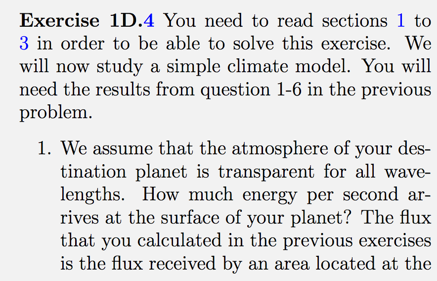

Hvis du slet med å få til oppgave 1D3, så kan du se på denne videoen for å få noen tips
. Hvis du er usikker på fremgangsmåte eller svaret, spør gruppelærer. Når du har forstått godt hvordan du løser 1D3, så er du klar til å ta fatt på å diskutere 1D.4 (også i prosjektet må en liknende utfordring løses):  
Legg merke til hintet om å anta at planeten er en skive! Neste side